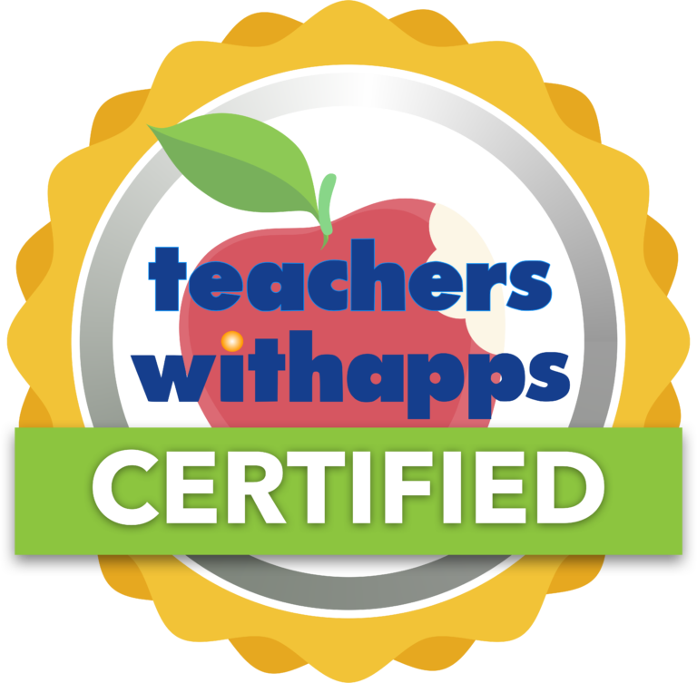

June 15 2017 - As Britain struggles with a hung parliament, and the USA moves towards its 241st Independence Day, the Physics Studio app is being launched with the goal of making school children hung up on Physics self-confident and independent. Physics Studio aims to bridge the gap between "finding" physics and "minding" physics.
Developed by Maza Learn a company whose aim is to make learning a fun-filled exploration, Physics Studio enables you to learn by doing, experimenting, making mistakes and learning from those mistakes.
With books and videos, the focus in on “teaching”. Studies repeatedly show that time spent correlates
poorly with actual concepts learnt. Physics Studio focusses on
“learning by doing”, as you
interact with fun-filled activities. A touchscreen
phone or tablet is all you need to embark on your journey to become a
scientist
by exploring the concepts through intriguing 2D and
3D
models.
Over 2000 concepts in mechanics, magnets, motors, density,
states of
matter,
electric circuits, energy, gravity, waves, light, optics are
explored in fun
simulations, challenges and games with an intuitive interface.
Molecules, electric
currents and fields come to life on your screen, creating a clear
picture in
your head of exactly how physics works. A comprehensive quiz
drills down on concepts, providing support for 9th
and 10th grade students learning different
syllabuses.
“...A great deal of content has been
jam-packed into ‘Physics Studio’ and it is phenomenal considering that
this is currently available free of charge." - Educational
App Store “......this
app is a labor of love from the developers to share the underlying
concepts of a physics curriculum with all" - Teachers
with Apps
Sridhar Sundaram, co-founder of Maza Learn, says: “In today's world, learning is not about ‘finding’ but about ‘minding’. Books and videos have a 20% retention rate - what drives real engagement and real learning is interactivity which has an astounding 90% retention. Physics Studio is built on 'Experiential Concept' learning or 'EC' learning whereby concepts are learnt by experiencing them virtually.”
Physics Studio is available for free from the Apple iTunes Store and Android Play Store and Chrome Store is compatible with all devices running iOS 7.0 or Android 3.0 or Chrome Web browser 29 or later.
Download Physics Studio today to see why science has never before been so accessible and so much fun.
Notes to Editors
Physics Studio was created by Maza Learn. For more information visit www.mazalearn.com or email info@mazalearn.com
Facebook - www.facebook.com/games/mazalearn
Google+ - www.google.com/+Mazalearn